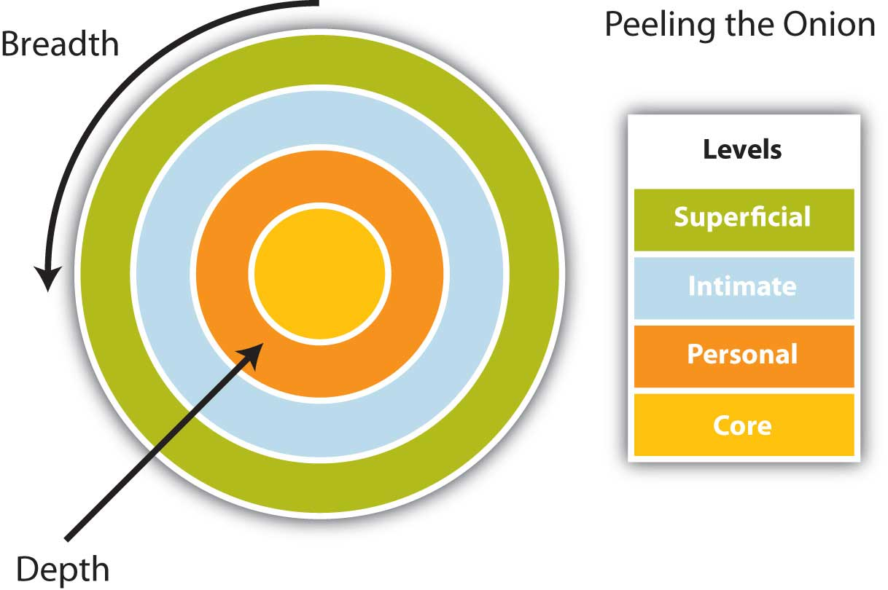
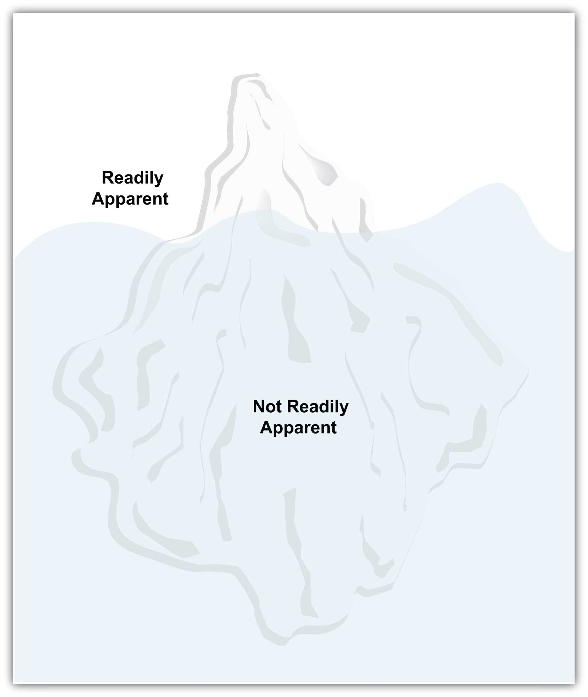

In this section we will examine why we communicate, illustrating how meeting the listener’s basic needs is central to effective communication. It’s normal for the audience to consider why you are persuading them, and there is significant support for the notion that by meeting the audience’s basic needs, whether they are a customer, colleague, or supervisor, you will more effectively persuade them to consider your position.
Not all oral presentations involve taking a position, or overt persuasion, but all focus on the inherent relationships and basic needs within the business context. Getting someone to listen to what you have to say involves a measure of persuasion, and getting that person to act on it might require considerable skill. Whether you are persuading a customer to try a new product or service, or informing a supplier that you need additional merchandise, the relationship is central to your communication. The emphasis inherent in our next two discussions is that we all share this common ground, and by understanding that we share basic needs, we can better negotiate meaning and achieve understanding.
Table 14.1 "Reasons for Engaging in Communication" presents some reasons for engaging in communication. As you can see, the final item in the table indicates that we communicate in order to meet our needs. What are those needs? We will discuss them next.
Table 14.1 Reasons for Engaging in Communication
| Review | Why We Engage in Communication |
|---|---|
| Gain Information | We engage in communication to gain information. This information can involve directions to an unknown location, or a better understanding about another person through observation or self-disclosure. |
| Understand Communication Contexts | We also want to understand the context in which we communication, discerning the range between impersonal and intimate, to better anticipate how to communicate effectively in each setting. |
| Understand Our Identity | Through engaging in communication, we come to perceive ourselves, our roles, and our relationships with others. |
| Meet Our Needs | We meet our needs through communication. |
If you have taken courses in anthropology, philosophy, psychology, or perhaps sociology in the past, you may have seen Maslow’s hierarchy of needs (Figure 14.3 "Maslow’s Hierarchy"). Psychologist Abraham MaslowMaslow, A. (1970). Motivation and personality (2nd ed.). New York, NY: Harper & Row. provides seven basic categories for human needs, and arranges them in order of priority, from the most basic to the most advanced.
Figure 14.3 Maslow’s HierarchyMaslow, A. (1970). Motivation and personality (2nd ed.). New York, NY: Harper & Row.
In this figure, we can see that we need energy, water, and air to live. Without any of these three basic elements, which meet our physiological needs (1), we cannot survive. We need to meet them before anything else, and will often sacrifice everything else to get them. Once we have what we need to live, we seek safety (2). A defensible place, protecting your supply lines for your most basic needs, could be your home. For some, however, home is a dangerous place that compromises their safety. Children and victims of domestic violence need shelter to meet this need. In order to leave a hostile living environment, people may place the well-being and safety of another over their own needs, in effect placing themselves at risk. An animal would fight for its own survival above all else, but humans can and do acts of heroism that directly contradict their own self-interest. Our own basic needs motivate us, but sometimes the basic needs of others are more important to us than our own.
We seek affection from others once we have the basics to live and feel safe from immediate danger. We look for a sense of love and belonging (3). All needs in Maslow’s model build on the foundation of the previous needs, and the third level reinforces our need to be a part of a family, community, or group. This is an important step that directly relates to business communication. If a person feels safe at your place of business, they are more likely to be open to communication. Communication is the foundation of the business relationship, and without it, you will fail. If they feel on edge, or that they might be pushed around, made to feel stupid, or even unwanted, they will leave and your business will disappear. On the other hand, if you make them feel welcome, provide multiple ways for them to learn, educate themselves, and ask questions in a safe environment, you will form relationships that transcend business and invite success.
Once we have been integrated in a group, we begin to assert our sense of self and self-respect, addressing our need for self-esteem (4). Self-esteem is essentially how we feel about ourselves. Let’s say you are a male, but you weren’t born with a “fix-it” gene. It’s nothing to be ashamed of, but for many men it can be hard to admit. We no longer live in a time when we have to build our own houses or learn about electricity and plumbing as we grow up, and if it is not part of your learning experience, it is unreasonable to expect that you’ll be handy with a wrench from the first turn.
The do-it-yourself chain Home Depot may have recognized how this interest in home repair is paired with many men’s reluctance to admit their lack of experience. They certainly turned it into an opportunity. Each Saturday around the country, home repair clinics on all sorts of tasks, from cutting and laying tile to building a bird house, are available free to customers at Home Depot stores. You can participate, learn, gain mastery of a skill set, and walk out of the store with all the supplies you need to get the job done. You will also now know someone (the instructor, a Home Depot employee) whom you can return to for follow-up questions. Ultimately, if you don’t succeed in getting the job done right, they will help you arrange for professional installation. This model reinforces safety and familiarity, belonging to a group or perceiving a trustworthy support system, and the freedom to make mistakes. It’s an interactive program that squarely addresses one of customers’ basic of human needs.
Maslow discusses the next level of needs in terms of how we feel about ourselves and our ability to assert control and influence over our lives. Once we are part of a group and have begun to assert ourselves, we start to feel as if we have reached our potential and are actively making a difference in our own world. Maslow calls this self-actualization (5). Self-actualizationInvolves reaching your full potential, feeling accepted for who you are, and perceiving a degree of control or empowerment in your environment. can involve reaching your full potential, feeling accepted for who you are, and perceiving a degree of control or empowerment in your environment. It may mean the freedom to go beyond building the bird house to the tree house, and to design it yourself as an example of self-expression.
As we progress beyond these levels, our basic human curiosity about the world around us emerges. When we have our basic needs met, we do not need to fear losing our place in a group or access to resources. We are free to explore and play, discovering the world around us. Our need to know (6) motivates us to grow and learn. You may have taken an elective art class that sparked your interest in a new area, or your started a new sport or hobby, like woodworking. If you worked at low-paying jobs that earned you barely enough to meet your basic needs, you may not be able to explore all your interests. You might be too exhausted after sixty or seventy hours a week on a combination of the night shift and the early morning shift across two jobs. If you didn’t have to work as many hours to meet your more basic needs, you’d have time to explore your curiosity and address the need to learn. Want to read a good book? You’d have the time. Want to take a watercolor class? Sounds interesting. If, however, we are too busy hunting and gathering food, there is little time for contemplating beauty.
Beyond curiosity lies the aesthetic need to experience beauty (7). Form is freed from function, so that a wine bottle opener can be appreciated for its clever design that resembles a rabbit’s head instead of simply how well it works to remove the cork. The appreciation of beauty transcends the everyday, the usual; it becomes exceptional. You may have walked in a building or church and become captivated by the light, the stained-glass windows, or the design. That moment that transcends the mundane, that stops you in your tracks, comes close to describing the human appreciation for the aesthetic, but it’s really up to you.
We can see in Maslow’s hierarchy how our most basic needs are quite specific, and as we progress through the levels, the level of abstraction increases until ultimately we are freed from the daily grind to contemplate the meaning of a modern painting. As we increase our degree of interconnectedness with others, we become interdependent and, at the same time, begin to express independence and individuality. As a speaker, you may seek the safety of the familiar, only to progress with time and practice to a point where you make words your own.
Your audience will share with you a need for control. You can help meet this need by constructing your speech with an effective introduction, references to points you’ve discussed, and a clear conclusion. The introduction will set up audience expectations of points you will consider, and allow the audience to see briefly what is coming. Your internal summaries, signposts, and support of your main points all serve to remind the audience what you’ve discussed and what you will discuss. Finally, your conclusion answers the inherent question, “Did the speaker actually talk about what they said they were going to talk about?” and affirms to the audience that you have fulfilled your objectives.
The field of communication draws from many disciplines, and in this case, draws lessons from two prominent social psychologists. Irwin Altman and Dalmas Taylor articulated the social penetration theoryTheory by Irwin Altman and Dalmas Taylor which describes how we move from superficial talk to intimate and revealing talk., which describes how we move from superficial talk to intimate and revealing talk.Altman, I., & Taylor, D. (1973). Social penetration: The development of interpersonal relationships. New York, NY: St. Martin’s Press. Altman and Taylor discuss how we attempt to learn about others so that we can better understand how to interact.Altman, I., & Taylor, D. (1973). Social penetration: The development of interpersonal relationships. New York, NY: St. Martin’s Press. With a better understanding of others and with more information, we are in a better position to predict how they may behave, what they may value, or what they might feel in specific situations. We usually gain this understanding of others without thinking about it through observation or self-disclosure. In this model, often called the “onion model,” we see how we start out on superficial level, but as we peel away the layers, we gain knowledge about the other person that encompasses both breadth and depth.
Figure 14.4 Altman and Taylor’s Social Penetration Model
Source: Adapted from Altman and Taylor’s social penetration model.Altman, I., & Taylor, D. (1973). Social penetration: The development of interpersonal relationships. New York, NY: St. Martin’s Press.
We come to know more about the way a person perceives a situation (breadth), but also gain perspective into how they see the situation through an understanding of their previous experiences (depth). Imagine these two spheres, which represent people, coming together. What touches first? The superficial level. As the two start to overlap, the personal levels may touch, then the intimate level, and finally the core levels may even touch. Have you ever known a couple—perhaps your parents or grandparents—who have been together for a very long time? They know each other’s stories and finish each other’s sentences. They might represent the near overlap, where their core values, attitudes, and beliefs are similar through a lifetime of shared experiences.
Figure 14.5 American Foreign Service Manual Iceberg Model
We move from public to private information as we progress from small talk to intimate conversations. Imagine an onion. The outer surface can be peeled away, and each new layer reveals another until you arrive at the heart of the onion. People interact on the surface, and only remove layers as trust and confidence grows.
Another way to look at it is to imagine an iceberg. How much of the total iceberg can you see from the surface of the ocean? Not much. But once you start to look under the water, you gain an understanding of the large size of the iceberg, and the extent of its depth. We have to go beyond superficial understanding to know each other, and progress through the process of self-disclosure to come to know and understand one another. See Figure 14.5 "American Foreign Service Manual Iceberg Model" for an illustration of an “iceberg model” adapted from the American Foreign Service Manual.American Foreign Service Manual. (1975). This model has existed in several forms since the 1960s, and serves as a useful illustration of how little we perceive of each other with our first impressions and general assumptions.
We are motivated to communicate in order to gain information, get to know one another, better understand our situation or context, come to know ourselves and our role or identity, and meet our fundamental interpersonal needs.